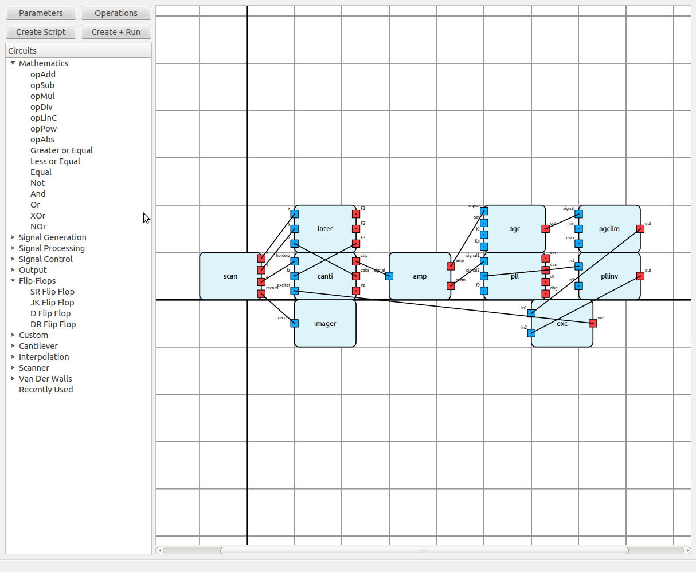

Documentation > Graphical User Interface
Graphical User Interface
Download the GUI from this link
Basic Usage
the Program
First you need to have PyQt4 installed and pyvafm if you wish to run the scripts. Start the UI by navigating to the UI src folder and running main_window.py with python (python main_window.py).
Adding Circuits
The UI offers a simple drag and drop interface for adding circuits. Simply select the circuit you want from the circuits tree and drag it to the setup. Alternatively you can select the circuit and shift + left click the setup to add the circuit as many times as you want.
Moving Around the Setup
Circuits can be moved around by dragging. Holding down middle mouse button or control(cmd on mac) + left mouse button will let you pan around the setup.
Connecting Circuits
Connecting circuits can be done by clicking the desired input and output in succession. If you want to abort the connection simply click something other that an input or output. Keep in mind that inputs can only be connected to one output but outputs can have as many connections as you like.
Setting Parameters
Circuit parameters can be opened by double clicking the circuit. Simply set the desired values in the parameter window and press done to save the parameters. Different parameters can be cycled through with tab and backwards with shift+tab. Setting values for the inputs is done by double clicking the corresponsing input.
Setting up the Machine
In the top left corner of the window there are two button parameters and operations. Parameters will open the parameter window of the machine. These parameters have to be set for the simulation to run. Operations will open up a window to select the run time operations of the setup. Left side of the window will show you all the possible options. Select the operation you want by dragging them to the area on the left. You can rearrange the operation as you like by dragging and dropping. Remove unwanted operations by dragging them out or by pressing delete.
Creating the Script
Once you have created the desired setup you can turn the setup into a pyvafm script. On the top left corner there are two buttons for creating the script. Create script will just create the script and nothing else. Create + run will first create the script and then runs it. The pyvafm output will be shown in stdout (most likely the terminal). The script doesn't require the UI to run so for longer simulations you can close the UI and let the simulation run.
Saving
If you have a created a setup you might want to edit later in the UI you need to save it in addition to creating the script. Top menus offer options for saving and loading (also bound to control+s and control+l). Be aware that loading a setup will clear your current setup. If you wish to add a saved setup to you current setup use insert, which will only add the circuits to your current setup.
Context Actions
Right clicking objects in the setup will bring up context action involving that object. This most importantly includes the option to remove different groupings of objects. For example you can remove all connection from a setup, all connections from certain input or output or just a single connection depending on what you choose.
Selections
Selections let you work with multiple circuits simultaneously. You can select circuits by rubberband selection or by toggling their selection state with control
- left click. Every selected circuit will move as a group as long as they are selected. You can also decide to save these selected circuits for later use. For example to insert them to a different setup. Or alternatively you can delete all the selected circuits.
Hotkey Selections
You can bind selections to your number keys by pressing control + number. You can access these selections again by pressing the corresponding number. Number 0 will allways be bound to your most recent selection.
Adding Circuits
To add a support for a circuit in the UI you need to add a entry for the circuit in the circuits.py circuits dictionary. The dictionary key will be displayed on the circuit tree. The value will be a CircuitInfo object defining the circuit information.
CircuitInfo parameters
- name Defines the name the circuit used by the machine.
- group The circuit will be grouped under this tag on the circuit tree
- inputs Defines all the inputs of the circuit. If the number of input is linked to certain parameter you can define it by adding #ParameterName after the input name.
- outputs Same as above.
- param_window_style Ordered dictionary that defines the widgets used in the parameter window. More information below.
- default_values Optional. Can define a default value for a parameter. The name has to match the parameter name in param_window_style. For values linked to inputs/outputs default value has to be set.
- script_format Defines how the circuit will be written to the script. More information below.
Window Style
Parameter window style is defined as a ordered dictionary of name widget pairs. Name is used as the label in parameter window and also as the name of the parameter in general. The name has to matched in linked inputs/outputs, default values and script format. Widget defines what kind of a widget is used for setting the value of the parameter. All the available widgets are introduced in widgets.txt.
The window will be laid out with label and widget next to each other with all the different parameters stacked on top of each other.
Format
The script format is required so the UI knows how to write the script. Script will be written in blocks. The blocks are used to ensure that all the necessary pieces are added before certain actions occur. The blocks should be used like this:
- Block 0: Imports and setting up the machine
- Block 1: Adding the circuits
- Block 2: Connecting circuits
- Block 3: Configuring circuits dependand on other circuits
- Block 4: Run time operations
The format itself is defined below. Lines without any of these special qualifiers will be written as is. This can be used for example to add comments and white space to improve the readability of the script.
The format: Delimiters: ! at the start of the line followed by number 0-4 to define the block in which the following lines will be written. Parameter% to signal a parameter, these will be replaced by the corresponding values from parameters dictionary and as such must match the names given in param_window_format. example: Name% $Statement$ to signal an optional parameter, anything inside these will not be written if the parameter is missing. These should be used to enclose the parameter name in addition to the value so that they're not mistakingly added when the parameter is not set. example: $parameter = 'Parameter'$ £Line£ to signal optional line, these lines will not be written if no OPTIONAL parameters (defined by $$) are contained inside. example: £name%.Configure($parameter = Parameter%$)£
Wildcard statements: INPUTS is used to define where all input values of the circuit are written. Needs to be added inside optional and parameter delimiters ($INPUTS%$). example: machine.AddCircuit(type='Example', name = 'Name', $INPUTS%$)
Widgets Configured to be Used in the Parameter Windows
- LineEdit Simple line edit for user to write parameter values in. Contains multiple subtypes for different kind of inputs with different completion and validation options. Subtypes are defined in the line_edits.py file.
- NameLineEdit
- FileLineEdit
- BitLineEdit
- ThreeDimensionLineEdit
- TripleBoolLineEdit
- IntLineEdit
- DoubleIntLineEdit
- TripleIntLineEdit
- FloatLineEdit
- DoubleFloatLineEdit
- TripleFloatLineEdit
- MoveLineEdit
- MoveRecordLineEdit
- ModeSetupLineEdit
- CheckBox Check box for setting single boolean values.
- FileDialog Opens a file dialog for user to select an existing file.
- DirDialog Opens a file dialog for user to select an existing directory.
Specific widgets that can be used but probably too specialized:
- RegisterDialog Dialog for drag and drop selecting circuit outputs.
- ModeSetup Dialog for configuring different modes of advanced cantilever.
- RecorderSelect Dialog for selecting an output circuit.
 1.8.5
1.8.5